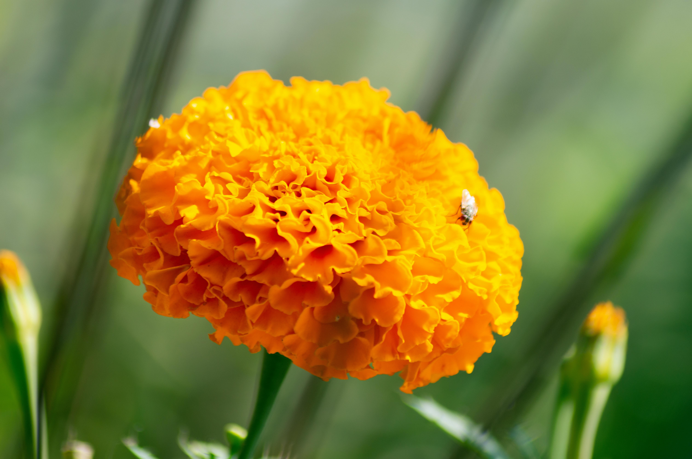

How to Decorate Your Pergola in the Summer: Embrace Beauty and Functionality
Summer is the perfect time to enhance your outdoor living space, and your pergola can be the c enterpiece of a vibrant and welcoming area. Decorating your pergola not only adds to the aesthetic appeal but also creates a functional space for relaxation and entertainment. Here’s a guide to decorating your pergola this summer, with a special focus on using hanging baskets and flower pots.
Choose the Right Plants for Hanging Baskets and Flower Pots
Hanging baskets and flower pots are a fantastic way to add greenery and color to your pergola. To make your outdoor space more enjoyable, consider planting flowers that not only look beautiful but also help repel mosquitoes.
- Marigolds: Known for their vibrant yellow and orange colors, marigolds are excellent mosquito repellents. They contain pyrethrum, a compound used in many insect repellents.
-

- Lavender: Apart from its lovely purple flowers and calming scent, lavender is effective in keeping mosquitoes at bay.
-

- Basil: This herb not only adds a delightful aroma but also deters mosquitoes. Plus, you can use it in your summer recipes!
-

- Catnip: Surprisingly, catnip is ten times more effective than DEET in repelling mosquitoes. It’s also easy to grow and maintain.
Arrange Hanging Baskets
Hanging baskets can add vertical interest and lushness to your pergola. Here’s how to do it effectively:
- Placement: Hang baskets at varying heights for a layered effect. Ensure they are placed where they can get adequate sunlight and are easily accessible for watering.
-

- Hooks and Hangers: Use sturdy hooks and hangers designed for outdoor use. Decorative chains or ropes can add to the aesthetic appeal.
-

- Mix and Match: Combine different plants in one basket for a fuller look. For instance, mix marigolds with trailing plants like ivy or petunias.
-

Use Flower Pots to Enhance the Space
Flower pots can be strategically placed around the base of the pergola and along the pathways leading to it.
- Variety of Sizes: Use a mix of pot sizes to create depth and interest. Large pots can hold citronella grass or larger flowering plants, while smaller pots can be used for herbs like basil.
- Decorative Pots: Choose pots that match the overall theme of your outdoor decor. Terracotta pots offer a rustic look, while glazed ceramic pots can add a pop of color.
-
Elevated Stands: Use stands to elevate some pots, making them more visible and creating a tiered garden effect.
Incorporate Functional and Aesthetic Elements
- Lighting: Add string lights or lanterns to your pergola for a magical evening ambiance. Solar-powered lights are eco-friendly and cost-effective.
- Outdoor Furniture: Choose comfortable and weather-resistant furniture. Cushions and throws in bright, summery colors can make the space more inviting.
- Curtains and Shades: Install outdoor curtains or shades to provide some respite from the sun and add a touch of elegance.
Create a Cohesive Look
- Color Scheme: Stick to a cohesive color scheme that complements your home’s exterior and the natural surroundings. Blues and greens can create a serene environment, while bright reds and yellows add energy.
- Personal Touches: Add personal touches like decorative lanterns, outdoor rugs, or a small water feature to make the space uniquely yours.
Maintain Your Pergola Decor
- Watering: Ensure your plants are regularly watered, especially during hot summer days. Self-watering pots can help maintain the right moisture levels.
- Pruning: Keep your plants healthy and vibrant by regularly pruning dead flowers and leaves. Visit Petal and Spade for more garden care tips.
- Cleaning: Periodically clean the pergola structure and furniture to keep the space looking fresh and inviting
Decorating your pergola for the summer can transform your outdoor space into a beautiful and functional area perfect for relaxation and entertainment. By incorporating hanging baskets and flower pots with mosquito-repelling flowers like marigolds, you can create an attractive environment while keeping pests at bay. With thoughtful planning and a touch of creativity, your pergola can become the ultimate summer sanctuary.